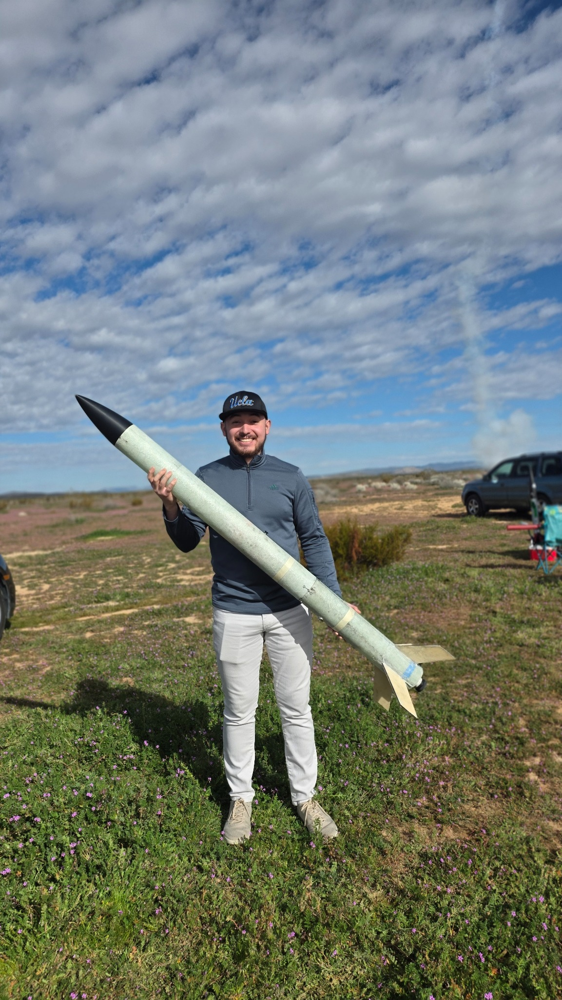
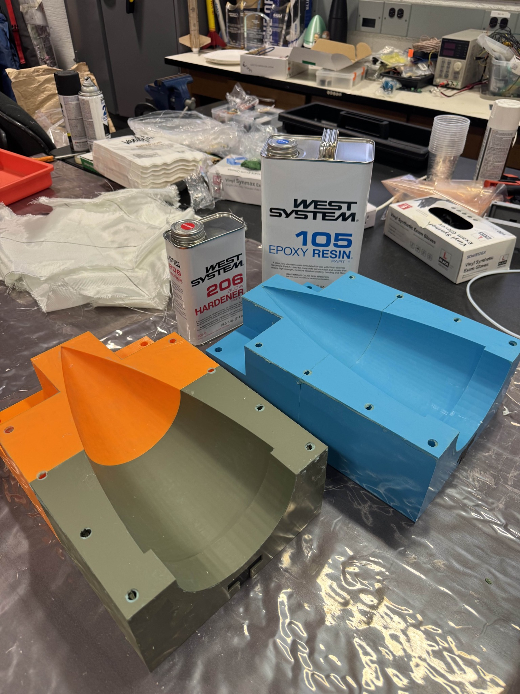
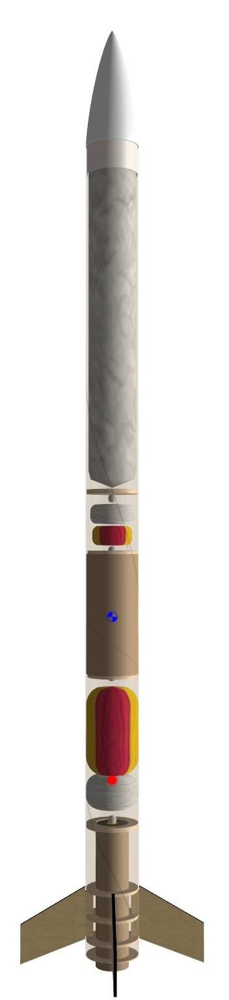
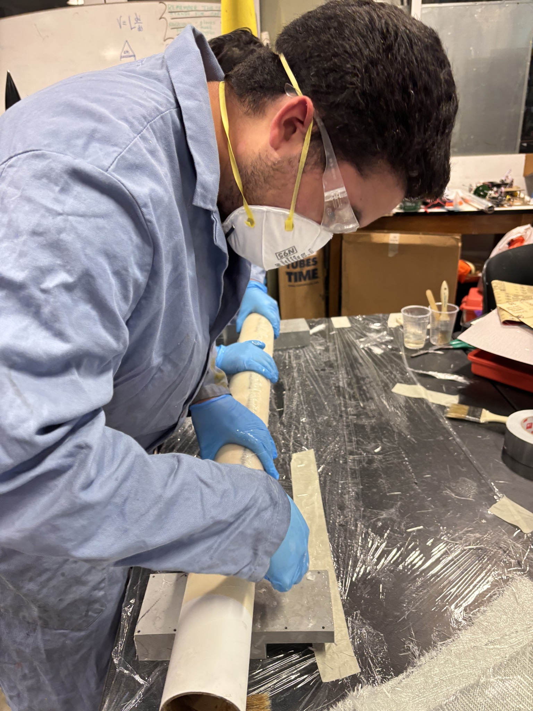
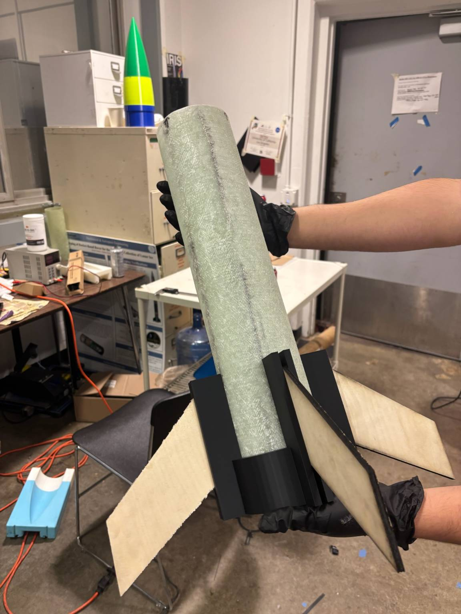

Design-to-hardware manufacturing of composite rocket structures for UCLA Bearospace’s 2026 NASA Student Launch entry, from 3D-printed molds and fiberglass layups to assembly and fabrication leadership.


Values taken from the team’s Dec. 20, 2025 Critical Design Review (CDR). These are design specifications or targets—not measured launch outcomes.
Translate an evolving launch vehicle design into manufacturable composite hardware while balancing structural requirements, aerodynamic considerations, sensor compatibility, cost, and repeatability.
The team refined vehicle geometry, materials, and manufacturing methods to meet structural and integration requirements. As a Manufacturing Lead, I helped connect engineering design to fabrication processes, workshop execution, and component integration.
The team selected a Haack-series nose cone over parabolic and ogive alternatives. The decision considered simulated stability, mass, altitude, internal hardware volume, and manufacturability. Biaxial fiberglass was selected partly for its radio-transparency properties, which matter for electronics housed inside the nose cone.
| CDR nose cone comparison | Haack series | Parabolic | Ogive |
|---|---|---|---|
| Weighted design score | 90.0 | 82.8 | 72.6 |
| Simulated stability (cal) | 2.40 | 2.39 | 2.37 |
| Predicted altitude (ft) | 4,715 | 4,710 | 4,702 |

The CDR documents fabrication of the nose cone using printed molds, release preparation, fiberglass wet layup, and a custom vacuum-bagging approach. The vacuum stage was used to consolidate the laminate, reduce trapped air and excess resin, and improve the surface finish. Workshop photography also shows composite layup work on a cylindrical body-tube section.
Prepare printed split molds and apply release materials before placing the reinforcement.
Cut biaxial fiberglass plies and wet them with epoxy while controlling coverage and fiber placement.
Use vacuum bagging to consolidate the layup; examine the cured part for finish, defects, and assembly fit.

The CDR identifies Manufacturing Leads as responsible for reviewing fabrication plans, coordinating machines and assembly, improving manufacturing workflows, and verifying functional fit against design specifications. My portfolio emphasizes the hands-on manufacturing and CAD-to-hardware work documented in the project rather than assigning all vehicle analysis to an individual.
Responsibilities and project contributions are summarized conservatively; no individual ownership is implied for all team-level analyses.
As design requirements matured, the team evaluated aerodynamic geometry, structural thickness, materials, and fabrication constraints. The documented design adopts a Haack-series fiberglass nose cone and a 6.7-inch outer-diameter airframe. These decisions reflect the balance between simulated performance, component integration, and practical manufacturing.

Technical figures and design details summarized from UCLA Bearospace’s Critical Design Review (Dec. 20, 2025), particularly the launch vehicle summary (pp. 8–9), nose cone selection and construction (pp. 13–17), and manufacturing leadership role (p. 4). Internal project documents are not linked or distributed. Obtain team approval for public photography and specifications.